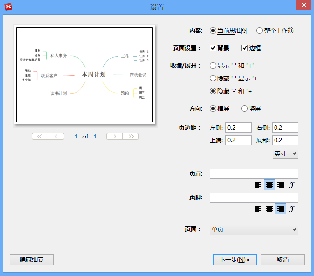
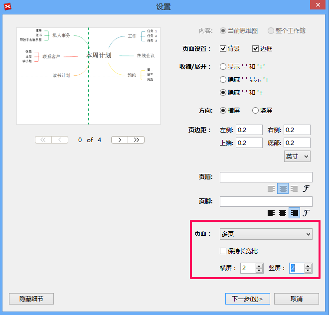

打印
单页打印按照下列步骤您可打印XMind思维图:
- 选择您要打印的思维图；
- 打开打印预览通过:
- 在菜单栏选择“文件 - 打印”；
- 使用快捷键 'Ctrl+P'。
- 调整打印设置: 打印内容，页面设置，方向，页边距，页眉/页脚文字。
- 单击“下一步”并选择打印机；
- 单击“打印”。

分页打印当您的思维图很大时，单页打印可能不能清楚地显示思维图的所有细节。通过多页打印思维图您可以把一张大的思维图打印在多页纸上并粘贴起来。为了更好地显示您的思维图，您还可以选择横向或纵向打印。
分页打印:
- 前三个步骤和单页打印相同；
- 点击“页面”选择多页打印并设置横屏与竖屏值；
- 单击“下一步”并选择打印机；
- 单击“打印”。
